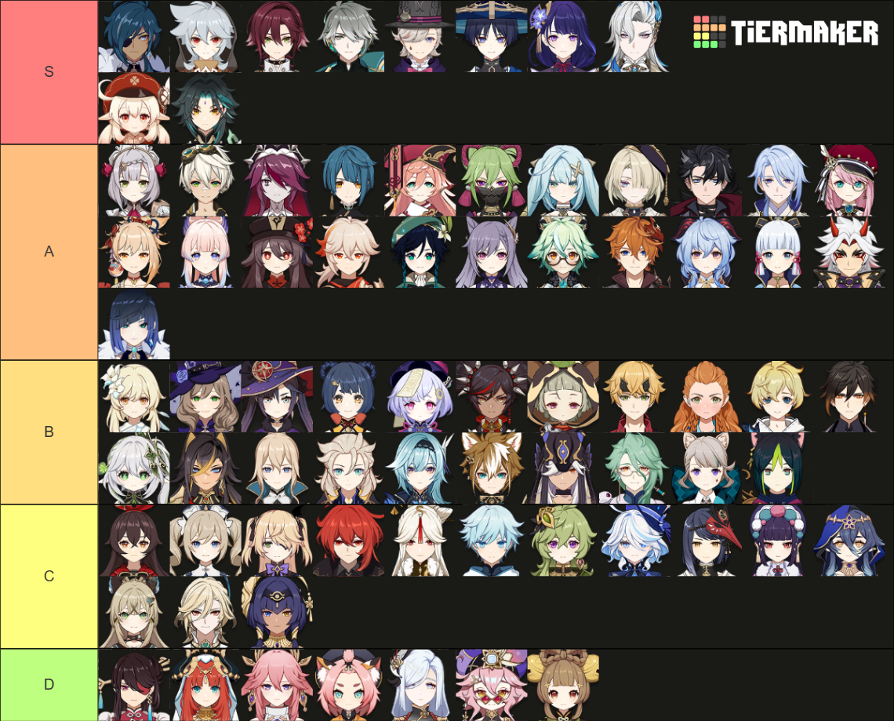

This is tier list 100% accurate and shouldn't be refuted.
My top three characters are:
Kaeya
I prefer DPS Kaeya as his burst is really strong and his skill comes in handy when I need to group freeze enemies
Heizou
His Normal ATK spreads the elemental energy for any elementalreactions made by my support characters. His skill is incredible strong as it easily makes high Anemo DMG.
Rosaria
Rosaria is a very good DPS character. Her skill allows me to transport myself when stuck in an enemy attack or evade their attack. Her Burst increases the CRIT RATE for any character in the circle, which is perfect for Kaeya.
Kaeya's character demo is the most simple, but he is a very good character.